SmartTools アドオン解説書
Smart Workspace（スマートワークスペース） 解説書
版 1.0.0 ／ 2026年11月17日 ／ Blender 5.1.2 用
Smart Workspace は、Blender の作業画面を使いやすく整えるためのアドオンです。Nパネル（3Dビュー右側のサイドバー）のタブが増えすぎた時に、よく使うタブだけを「カテゴリー」にまとめ、ポップアップの「クイックランチャー」から呼び出せます。ほかに、画面の配置（ワークスペース）の保存と読み込み、重いシーンで表示を軽くする「ビューポート最適化」、カメラの絵を別の窓で確かめる「2Dパンビュー」などの補助機能も入っています。裏で動き続ける機能の多くは、はじめは止まっています。必要な物だけを「常時起動切り替え」でオンにして使います。設定は Blender の CONFIG フォルダーの Smart_Workspace_Suite に保存され、Blender を起動し直しても戻ります。
1. このアドオンでできること
Nパネル（サイドバー）のタブ整理・クイックランチャー・画面配置の保存・表示の軽量化を、1つのタブにまとめた作業環境ツールです。
- よく使う N パネルのタブを「カテゴリー」にまとめ、ポップアップのクイックランチャーから 1 クリックで開けます。
- ランチャーに出すタブを選んだり、サイドバーのタブの名前と並び順を変えたりできます。よく使うタブのパネルをピン留めして、ほかのタブでも表示できます。
- 今のワークスペース（画面の分け方やエディターの種類）を「セーブステート」として保存し、あとで読み込めます。
- 「ビューポート最適化」で、表示を軽くする設定（最適化）と普段の設定（標準）をボタン 1 つで切り替えられます。
- 「2Dパンビュー」で、選んだカメラの絵を専用の窓で開き、パン（平行移動）やズームで確かめられます。
- 3D ビューのツールバー・サイドバー・ヘッダーをまとめて隠したり出したりできます。
- ワークスペースのタブを右クリックして、1 つずつ前後へ並べ替えられます。
- ワークスペースを切り替えても、3D ビューの見ている向きや表示を揃えたままにできます（ワークスペース同期）。
- 裏で動く機能（ハンドラー、タイマー、ホットキーなど）を「常時起動切り替え」で 1 つずつオン／オフできます。
- アドオンを多く入れて N パネルのタブが並びきらない時に、よく使うタブだけをランチャーにまとめる。
- モデリング用・アニメーション用など、作業ごとの画面の配置を保存して切り替える。
- 重いシーンで回転やズームがもたつく時に、表示を一時的に軽くする。
- カメラの構図を、三分割などのガイド付きで別の窓に出して確かめる。
- 録画や説明の時に、押したキーを画面に表示する（Screencast Keys）。
ひと目で分かる例
このアドオンを使うと、画面は次のように変わります。くわしい操作は 4 章の各機能の「実例」で説明します。
実例3D ビューの表示をプリセットで軽くする（細分化したスザンヌ 3 体で試した様子）
「ビューポート最適化」の「詳細設定」でプリセットを選んで適用すると、3D ビューの表示がすぐ軽い形に変わります。
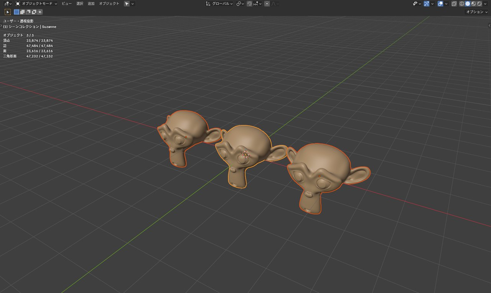
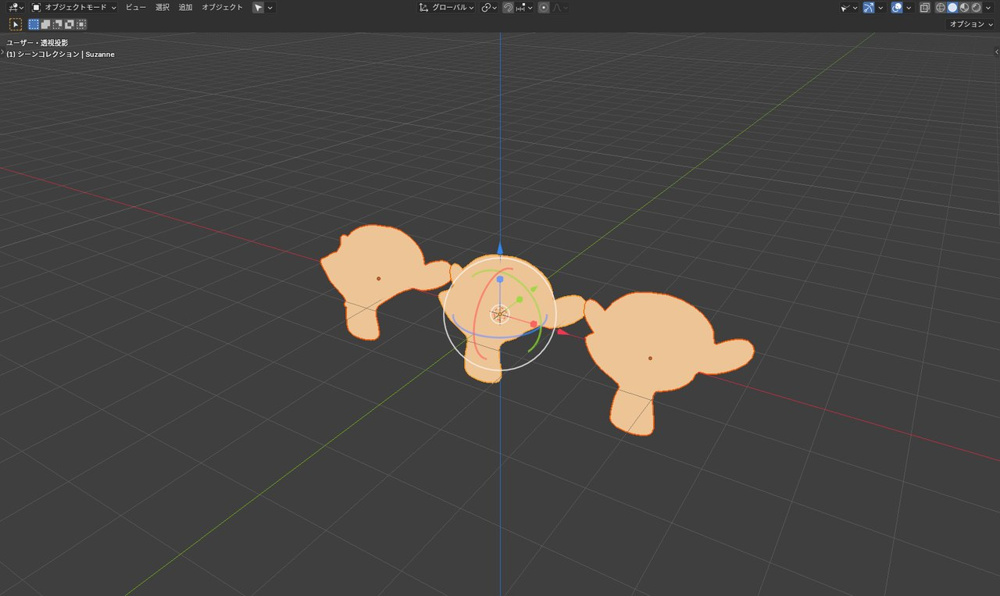
- 3D ビューのサイドバー（N キー）の「Smart Workspace」タブを開きます。
- 「ビューポート最適化」の見出しを開き、「詳細設定」を開きます。
- 「設定の読込」の「設定:」で「バランス」を選びます。
- 「プリセットを適用」を押します。
見どころ：前は陰影の付いた滑らかな面で表示されていますが、後は陰影の無い平たい色の表示になり、立体の凹凸が描かれなくなります。左上の統計（頂点・面の数）の表示も消え、選んだ物には移動・回転の矢印（ギズモ）が出ています。形そのものは変わっていません。
実例「最適化」で軽くして、「標準」で戻す（スザンヌとアーマチュアと空で試した様子）
プリセット「パフォーマンス」を適用すると、物の形だけを残した軽い表示に変わります。普段の表示には「標準」で戻ります。
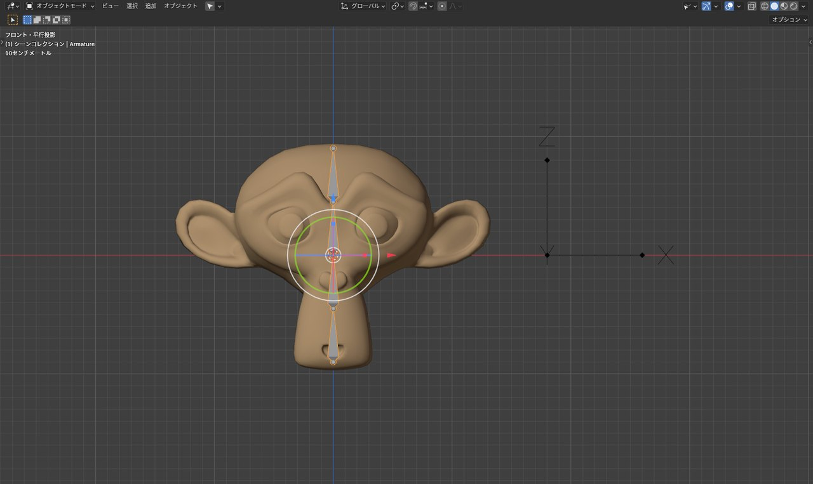
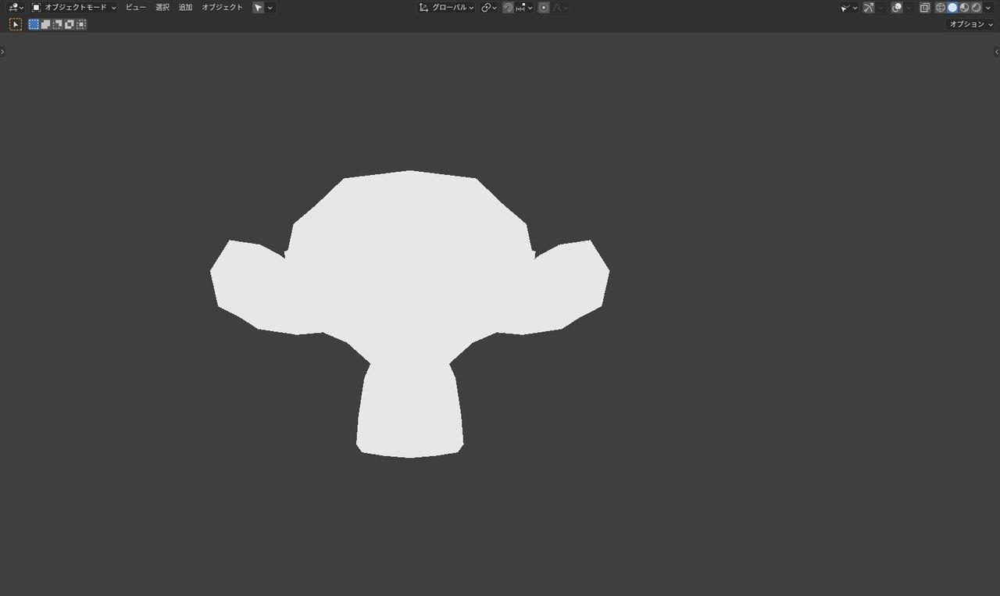
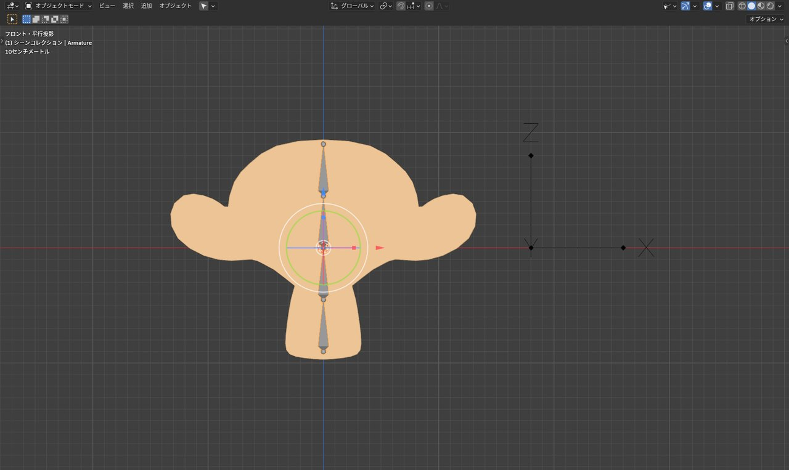
- 3D ビューのサイドバー（N キー）の「Smart Workspace」タブを開きます。
- 「ビューポート最適化」の見出しを開き、「詳細設定」を開きます。
- 「設定の読込」の「設定:」で「パフォーマンス」を選び、「プリセットを適用」を押します（「設定モード」は自動で「最適化」になります）。
- 戻す時は、「設定モード」の「標準」を押します。
見どころ：「最適化」では、スザンヌの細分化が切れて角ばった白い形になり、骨・矢印の空・移動の矢印・床の線がすべて消えます。「標準」を押すと、骨と空と細分化が戻ります。陰影や床の線も、保存済みの「標準」の設定へ戻ります。この例では陰影付きの表示に戻ります。
2. 準備
アドオンの入れ方・画面を日本語にする方法・N パネルと「？」ヘルプの共通の使い方は、「SmartTools 全体仕様書」にまとめています。先にそちらの 2〜5 章を読んでください。
| 入れる ZIP | SmartWorkspace_1.0.0_652B68A6B820_INSTALLABLE.zip |
|---|---|
| Blender の画面での名前 | Smart Workspace |
| 動く Blender | 5.1.2 |
3. 画面の場所
3D ビューのサイドバー（N パネル）にある「Smart Workspace」タブに、すべての操作がまとまっています。同じパネルは、画像エディター・ノードエディター・ビデオシーケンサー・動画クリップエディター・ドープシート・グラフエディター・NLA エディター・テキストエディター・ファイルブラウザー・スプレッドシートのサイドバーにも出ます。ほかに、3D ビューの上の帯（ヘッダー）に「ビューポート最適化」の切り替えボタン、ワークスペースのタブの右クリックメニューに並べ替えの項目が加わります（並べ替えは有効にした時だけ）。
| 出る画面 | 3D ビューポート、画像エディター（UV エディター）、ノードエディター、ビデオシーケンサー、動画クリップエディター、ドープシート、グラフエディター、NLA エディター、テキストエディター、ファイルブラウザー、スプレッドシート |
|---|---|
| タブ | Smart Workspace |
| モード | オブジェクトモード（どのモードでも使えます） |
- アドオンを入れて有効にし、画面を日本語にします（全体仕様書の「インストールと日本語化」の章を見てください）。
- 3D ビューのサイドバーを開きます（開き方は全体仕様書の「N パネルの開き方」の章を見てください）。
- サイドバーの右端に縦に並ぶタブから「Smart Workspace」を押します。
- パネル「スマートワークスペース」の中に、「常時起動切り替え」「ビューポート最適化」「ワークスペース管理」「Nパネル管理」「その他ツール」の見出しが並びます。見出しの左の三角を押すと中が開きます。
- 見出しの右にある「？」を押すと、その見出しの説明（ヘルプ）が出ます（使い方は全体仕様書の「？ヘルプ」の章を見てください）。
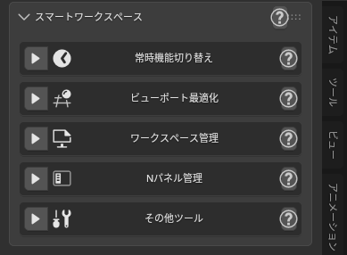
4. 機能の説明
画面の上から順に、見出しごとに説明します。見出しの右の「？」を押すと、同じ内容の説明が画面にも出ます。青い枠の「実例」は、スザンヌや MIK のモデルで実際に操作し、3D ビューでの変化を前と後で並べたものです。
4-1. スマートワークスペース（パネル全体）
Smart Workspace のすべての操作が入った親のパネルです。中は 5 つの見出しに分かれています。どの見出しも、はじめは閉じています。
場所3D ビューのサイドバー →「Smart Workspace」タブ →「スマートワークスペース」
| 表示 | 働き |
|---|---|
| 常時起動切り替え | 裏で動き続ける機能を、1 つずつオン／オフする所です。 |
| ビューポート最適化 | 表示を軽くする設定と普段の設定を切り替える所です。 |
| ワークスペース管理 | 画面の配置を保存し、あとで読み込む所です。 |
| Nパネル管理 | N パネルのタブの整理と、クイックランチャーの設定をする所です。 |
| その他ツール | 2Dパンビューなどの補助機能がまとまっている所です。 |
| ？（各見出しの右） | その見出しの機能の説明・使い方・設定の説明をポップアップで出します。 |
4-2. 常時起動切り替え
タイマーや描画、ホットキー（ショートカットキー）など、裏で動き続ける可能性がある機能をまとめて切り替えます。オフの機能は、パネルに行が出るだけで、動かすための読み込みはしません。起動と待機を軽くしたい時は、必要な物だけをオンにします。切り替えはすぐに保存され、再起動後や別のファイルを開いた後も戻ります。
場所「Smart Workspace」タブ →「常時起動切り替え」
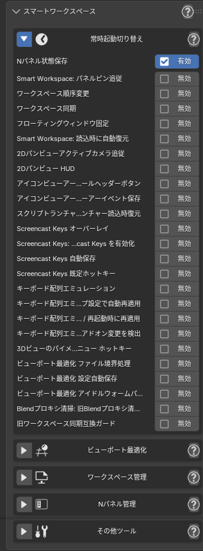
| 表示 | 働き |
|---|---|
| Nパネル状態保存 | Smart Workspace の設定を変えるたびにすぐ保存し、Blender の起動後に 1 回だけ戻します。はじめから「有効」になっている唯一の行です。各行の右のボタンで「有効」「無効」を切り替えます。 |
| Smart Workspace: パネルピン追従 | ランチャーでピンを付けたタブのパネルを、ほかのタブを開いている時も表示します。ランチャーのピンの印を押すと自動で「有効」になります。「無効」にすると、付いていたピンを外します。今見えていないパネルのピンは、次に表示された時に外れます。もう一度「有効」にすると、そのタブを開いた時にピンが戻ります。 |
| ワークスペース順序変更 | ワークスペースのタブの右クリックメニューに、1 つずつ並べ替える項目を足します（「その他ツール」の「ワークスペース順序移動」と同じ切り替えです）。 |
| ワークスペース同期 | ワークスペースを切り替えた時に、3D ビューの状態を揃えます。 |
| フローティングウィンドウ固定 | ワークスペースを切り替えても、切り離した別窓の中身を変えずに保ちます。 |
| Smart Workspace: 読込時に自動復元 | Blender の起動後や別の .blend を開いた後に、プロファイル・ランチャーのカテゴリー・保存済みの状態を自動で戻します。「Nパネルにリネームと並び順を適用」で変えたサイドバーのタブの名前と並びも、起動後に戻します。 |
| 2Dパンビューアクティブカメラ追従／2Dパンビュー HUD | 2Dパンビューの窓をシーンのアクティブカメラ（今使っているカメラ）に追従させる機能と、窓の左下に出る小さな操作ヒント（HUD）の切り替えです。ヒントは、この行を「有効」にした時だけ出ます。 |
| Screencast Keys オーバーレイ | 押したキーやマウスの操作を 3D ビューの上に表示します。録画や説明の時だけオンにします。 |
| Screencast Keys 既定ホットキー | Screencast Keys をショートカットで切り替えるキーを登録します。ほかのキーとぶつかる時はオフにします。 |
| キーボード配列エミュレーション | 選んだキーボードの配列に合わせて、Blender のショートカットを割り当て直します。オフにすると元に戻します。 |
| 3Dビューのパイメニュー ホットキー | 同梱のパイメニュー（マウスの周りに丸く出るメニュー）を呼ぶキーを登録します。 |
| ビューポート最適化 ファイル境界処理／設定自動保存／アイドルウォームパルス | ビューポート最適化の補助です。ファイルを開く・保存する時の自動処理、設定の自動保存、待機中のタイマーを、それぞれオン／オフします。 |
4-3. ビューポート最適化
重いシーンで 3D ビューを軽くする機能です。「標準」と「最適化」の 2 組の設定を持ち、ボタンで切り替えます。設定はワークスペースごとに持てます。
場所「Smart Workspace」タブ →「ビューポート最適化」。3D ビューのヘッダー（「オブジェクトモード」「ビュー」「選択」などが並ぶ帯）の左端にも切り替えボタンが出ます。
| 表示 | 働き |
|---|---|
| 今のワークスペース／ペースト元 | 今のワークスペース名と、設定をコピーしてくる元のワークスペースを表示します。元は「ペースト元」の右のメニューで選びます。 |
| 今のワークスペースへペースト | ペースト元のワークスペースの詳細設定を、今のワークスペースへコピーします。 |
| 設定モード（「標準」「最適化」） | 押した方の設定を詳細設定へ読み込み、すぐに 3D ビューへ反映します。「最適化」で軽い表示になります。「標準」を押すと、物ごとの表示・無効・選択可否・モディファイア・コンストレイント、選択の状態、アンドゥなどのプリファレンスが最適化の前の値に戻ります。シェーディングとオーバーレイは保存済みの「標準」の設定へ戻ります。標準設定が保存されていない場合だけ「バランス」の設定を使います。 |
| 設定の保存・キーマップ | 折りたたみの見出しです。「設定の自動保存」、「標準設定の保存」「標準設定の読み込み」、「最適化設定の保存」「最適化設定の読み込み」があります。「キーマップIDをコピー」を押すと、切り替えをショートカットに登録する時の名前を写し取れます。 |
| 詳細設定 | 折りたたみの見出しです。中の「設定の読込」の「設定:」で「パフォーマンス」「バランス」「クオリティ」を選んで「プリセットを適用」を押すと、詳細設定の全項目が変わり、すぐ 3D ビューに反映されます。「パフォーマンス」を適用すると「設定モード」は自動で「最適化」になり、メッシュは消えずに平たいソリッドで表示されます。空・アーマチュアなどは見えなくなり、物は選択できなくなり、選択は外れ、アンドゥもオフになります。どれも「標準」で戻りますが、アーマチュアを操作する作業には向きません。「現在のビュー設定を読み込み」は、今の Blender の表示設定を詳細設定へ読み込むだけで、表示は変えません。 |
| 詳細設定一覧の中の見出し | 「詳細設定一覧」の下に、「適用対象」「レンダープロパティ > 簡略化」「3Dビュー > シェーディング」「3Dビュー > オーバーレイ」「3Dビュー > ギズモ」「3Dビュー > 種類の表示」「3Dビュー > 種類の選択」「オブジェクト > ビューポート表示」「モディファイア > ビューポート表示」「制約」「パーティクルプレビュー」「プリファレンス > システム」「レンダープレビュー / エンジン」「プリファレンス > ナビゲーション」「プリファレンス > 編集 / ツール設定」「ナビゲーション事前ウォームアップ」の見出しが並びます。各見出しの「このセクションを反映」がオンの物だけが切り替えに使われます。たとえば「3Dビュー > シェーディング」の「ビューポート描画」を「ワイヤーフレーム」にすると、その場で線だけの表示になります。 |
| ヘッダーのボタン（スマートビューポート最適化を切替） | 3D ビューのヘッダーのアイコンで、標準と最適化をすぐ切り替えます。隣の下向きの印からは「ヘッダー設定」が開き、詳細設定をその場で変えられます。設定の見出しや、ヘッダーから開いた設定の「？」で説明を確認できます。 |
実例3D ビューの表示をプリセットで軽くする（細分化したスザンヌ 3 体で試した様子）
「ビューポート最適化」の「詳細設定」でプリセットを選んで適用すると、3D ビューの表示がすぐ軽い形に変わります。
- 3D ビューのサイドバー（N キー）の「Smart Workspace」タブを開きます。
- 「ビューポート最適化」の見出しを開き、「詳細設定」を開きます。
- 「設定の読込」の「設定:」で「バランス」を選びます。
- 「プリセットを適用」を押します。
見どころ：前は陰影の付いた滑らかな面で表示されていますが、後は陰影の無い平たい色の表示になり、立体の凹凸が描かれなくなります。左上の統計（頂点・面の数）の表示も消え、選んだ物には移動・回転の矢印（ギズモ）が出ています。形そのものは変わっていません。
実例「最適化」で軽くして、「標準」で戻す（スザンヌとアーマチュアと空で試した様子）
プリセット「パフォーマンス」を適用すると、物の形だけを残した軽い表示に変わります。普段の表示には「標準」で戻ります。
- 3D ビューのサイドバー（N キー）の「Smart Workspace」タブを開きます。
- 「ビューポート最適化」の見出しを開き、「詳細設定」を開きます。
- 「設定の読込」の「設定:」で「パフォーマンス」を選び、「プリセットを適用」を押します（「設定モード」は自動で「最適化」になります）。
- 戻す時は、「設定モード」の「標準」を押します。
見どころ：「最適化」では、スザンヌの細分化が切れて角ばった白い形になり、骨・矢印の空・移動の矢印・床の線がすべて消えます。「標準」を押すと、骨と空と細分化が戻ります。陰影や床の線も、保存済みの「標準」の設定へ戻ります。この例では陰影付きの表示に戻ります。
実例詳細設定の 1 項目を変えてワイヤーフレームにする（細分化したスザンヌで試した様子）
詳細設定の項目を変えると、その場で 3D ビューに映ります。ここでは「ビューポート描画」をワイヤーフレームに変えて、面を描かない表示にします。項目の使い方は、設定の見出しの「？」から確認できます。
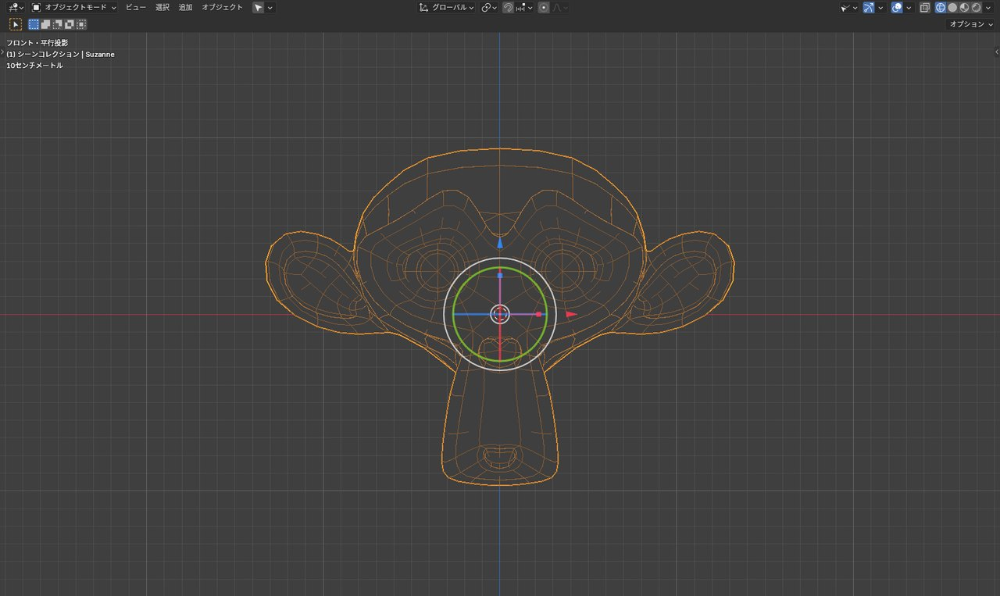
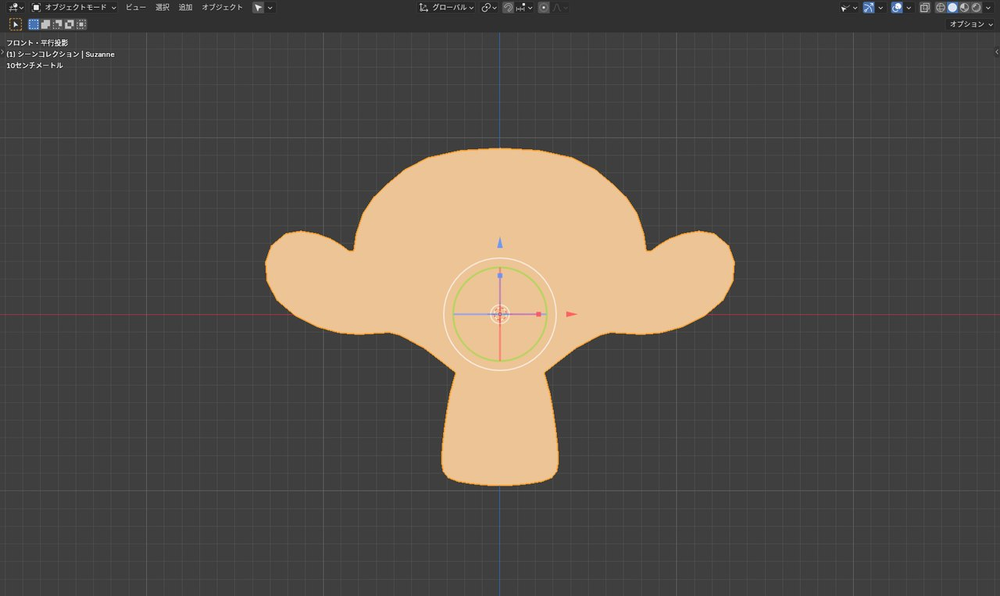
- 3D ビューのサイドバー（N キー）の「Smart Workspace」タブを開きます。
- 「ビューポート最適化」の「設定モード」で「標準」を押します。
- 「詳細設定」→「詳細設定一覧」の「3Dビュー > シェーディング」を開きます。
- 「ビューポート描画」のメニューで「ワイヤーフレーム」を選びます。
- 戻す時は「ソリッド」を選びます。
見どころ：メニューを変えた瞬間に、面の塗りが消えて線だけの表示になります。ボタンを押す必要はありません。「ソリッド」に戻すと、元の表示に戻ります。
4-4. ワークスペース管理
今のワークスペースの画面の分け方やエディターの種類を「セーブステート」（保存した状態の記録）として保存し、あとで今のワークスペースへ読み込みます。新しいワークスペースのタブは作りません。
場所「Smart Workspace」タブ →「ワークスペース管理」
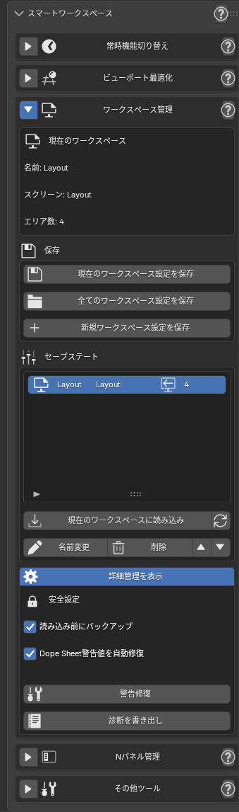
| 表示 | 働き |
|---|---|
| 現在のワークスペース | 今のワークスペースの名前・スクリーン名（普段はワークスペースと同じ名前です）・エリア（画面の区切り）の数を表示します。 |
| 現在のワークスペース設定を保存 | 今のワークスペースの状態をセーブステートとして保存し、下の一覧に行が増えます。 |
| 全てのワークスペース設定を保存 | ある分のワークスペースを全部、それぞれセーブステートとして保存します。 |
| 新規ワークスペース設定を保存 | 名前を付けて、今のワークスペースの状態を別のセーブステートとして保存します。 |
| セーブステート（一覧） | 保存したセーブステートの一覧です。各行には、左から名前、元のワークスペース名、エリアの数が出ます。名前を変えていなければ、同じ名前が 2 つ続けて出ます。「現在のワークスペースに読み込み」の右の更新ボタンで、一覧を読み直します。 |
| 現在のワークスペースに読み込み | 一覧で選んだセーブステートを、今のワークスペースに読み込みます。確認の窓で、読み込む情報（ワークスペース名、レイアウト・ドッキング情報、設定情報など）を選べます。画面の区切りとエディターの種類が、保存した時の形に作り直されます。 |
| 名前変更／削除／上下の矢印 | 選んだセーブステートの名前を変える、セーブステートを消す、一覧の順番を変える操作です。 |
| 詳細管理を表示 | オンにすると「安全設定」（「読み込み前にバックアップ」「Dope Sheet警告値を自動修復」）と「警告修復」「診断を書き出し」が出ます。 |
実例画面の配置を保存して読み込みで戻す（スザンヌで試した様子）
今の画面の分け方を「セーブステート」として保存しておくと、配置を変えた後でも読み込みで戻せます。
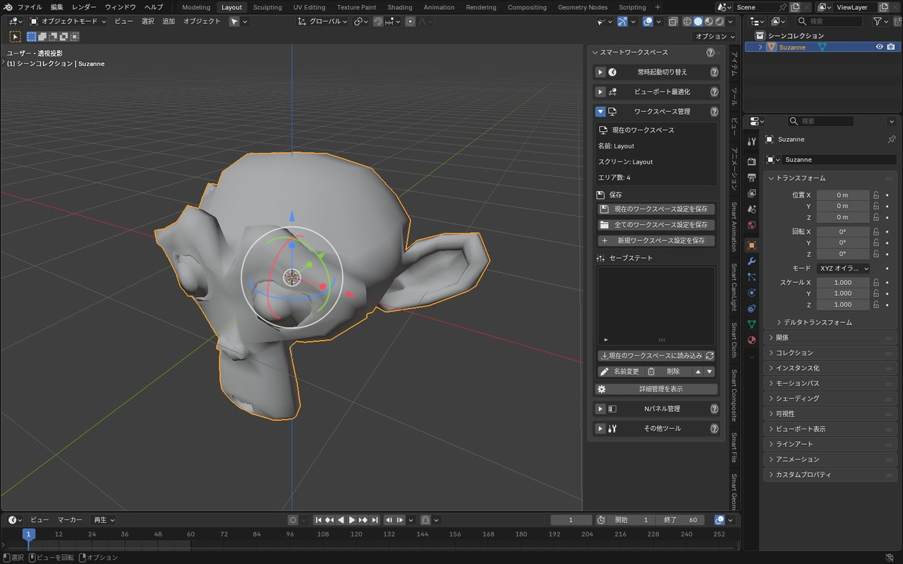
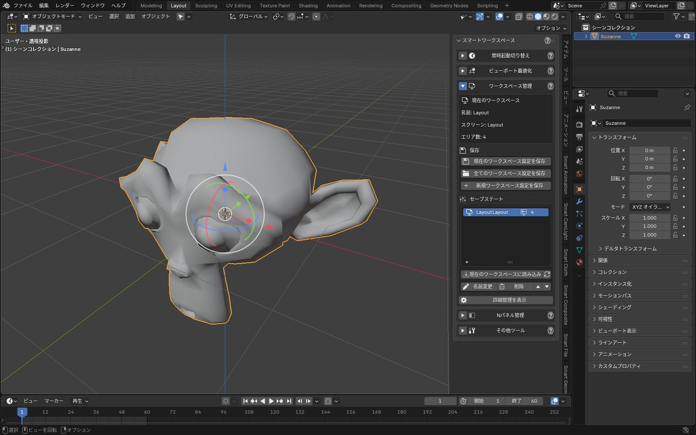
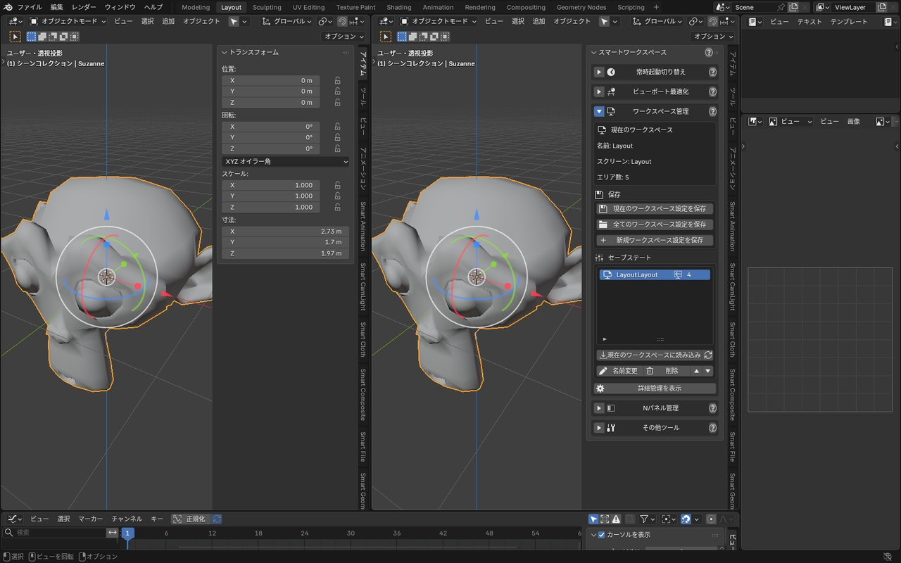
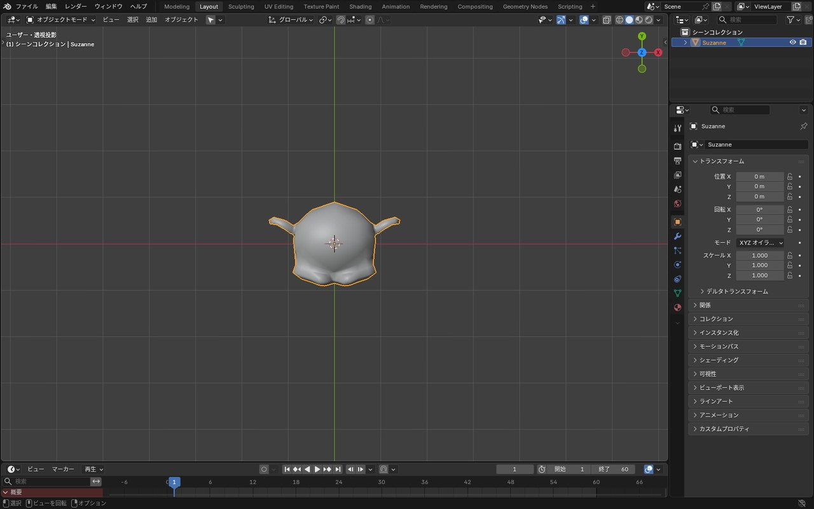
- 3D ビューのサイドバー（N キー）の「Smart Workspace」タブを開きます。
- 「ワークスペース管理」の見出しを開き、「現在のワークスペース設定を保存」を押します。
- 「セーブステート」の一覧に行が増えます。
- 配置を変えて作業します（この例では 3D ビューを左右に分け、右上と右下のエディターを替えました）。
- 一覧で保存した行を選び、「現在のワークスペースに読み込み」を押して、確認の窓で OK を押します。
見どころ：保存すると、「セーブステート」の一覧に行が増えます。行には名前と元のワークスペース名が続けて「Layout」「Layout」と出て、右の数字はエリアの数です。配置を変えた後に読み込むと、4 つの区切りとエディターの種類（アウトライナーやプロパティなど）が元に戻ります。3D ビューの向きと、開いていたサイドバーは戻らないので、読み込みの後に整えます。
4-5. Nパネル管理
N パネルのタブの整理と、クイックランチャーの設定をまとめた見出しです。中に 5 つの折りたたみ見出しがあります。
場所「Smart Workspace」タブ →「Nパネル管理」
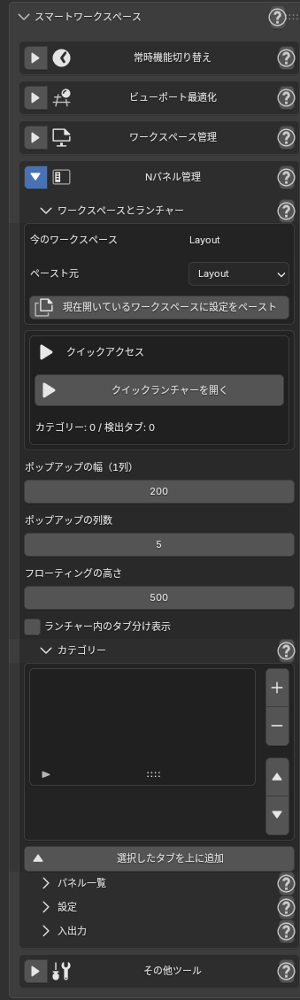
| 表示 | 働き |
|---|---|
| ワークスペースとランチャー | ランチャーを開くボタンと、ポップアップの幅・列数などの設定です。 |
| カテゴリー | ランチャーに出すグループ（カテゴリー）と、その中身を編集します。 |
| パネル一覧 | 見つかった N パネルのタブや個々のパネルの一覧です。タブの名前と並び順を決めて、サイドバーに適用できます。 |
| 設定 | .blend への保存と、ショートカットに登録する時の「コピー」のボタンです（見出しの中は「Smart Workspace 実行設定」と出ます）。 |
| 入出力 | 設定を JSON ファイルへ書き出す・読み込む所です。 |
4-6. ワークスペースとランチャー
クイックランチャー（登録したタブをボタンで並べたポップアップ）を開き、その見た目を決めます。ランチャーの構成はワークスペースごとに持てます。
場所「Nパネル管理」→「ワークスペースとランチャー」
| 表示 | 働き |
|---|---|
| 今のワークスペース／ペースト元 | 今のワークスペースと、構成をコピーしてくる元のワークスペースです。元は「ペースト元」の右のメニューで選びます。 |
| 現在開いているワークスペースに設定をペースト | ペースト元のランチャー構成を、今のワークスペースへコピーします。 |
| クイックランチャーを開く | 「クイックアクセス」の枠の中にあるボタンです。ランチャーのポップアップを開きます。カテゴリーごとの枠にタブのボタンが並びます。ボタンの下には「カテゴリー: 0 / 検出タブ: 0」のように、作ったカテゴリーの数と見つかったタブの数が出ます。 |
| ランチャーのタブのボタン | 押すと 3D ビューのサイドバーがそのタブで開きます。別のタブが表示中ならそのタブへ切り替え、そのタブがすでに表示中ならサイドバーを閉じます。Ctrl＋クリックでは、そのタブを別の 3D ビューの窓で開きます。Alt＋クリックでは、タブの中のパネルを直接開きます。左のピンの印を押すと、そのタブがサイドバーで開き、中のパネルにピンが付いて、ほかのタブを開いている時も表示されます（「パネルピン追従」も「有効」になります）。閉じているパネルには、開いた時にピンが付きます。もう一度押すとピンが外れます。ピンはワークスペースごとに覚えます。 |
| ポップアップの幅（1列）／ポップアップの列数 | ランチャーの 1 列の幅と、並べる列の数です。タブ名が長い時は幅を広げます。 |
| フローティングの高さ | ランチャーから別窓で開くパネルの、窓の高さです。パネルが下で切れる時は大きくします。 |
| ランチャー内のタブ分け表示 | オンにすると、カテゴリーを上のタブで切り替える表示になります。オフでは枠を並べて全部を表示します。 |
実例ランチャーのボタンでタブを開く（スザンヌで試した様子）
よく使うタブをカテゴリーにまとめると、ポップアップのボタン 1 つでサイドバーをそのタブで開けます。
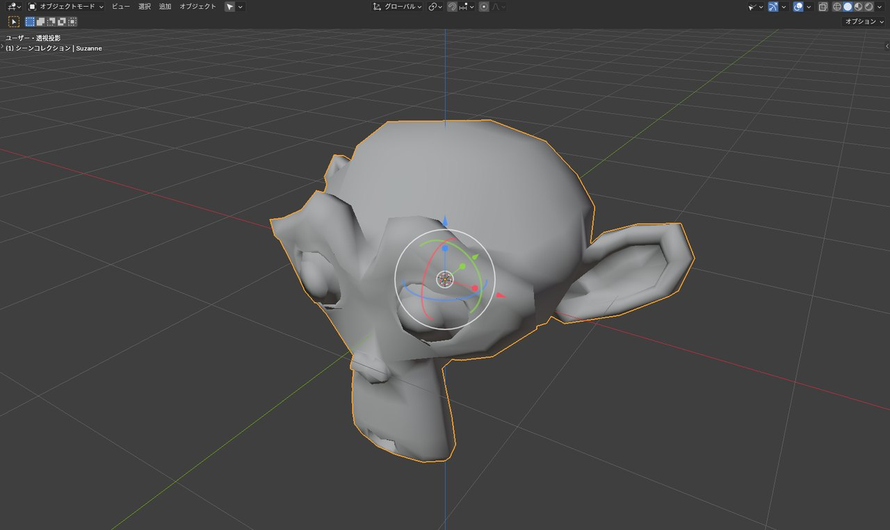
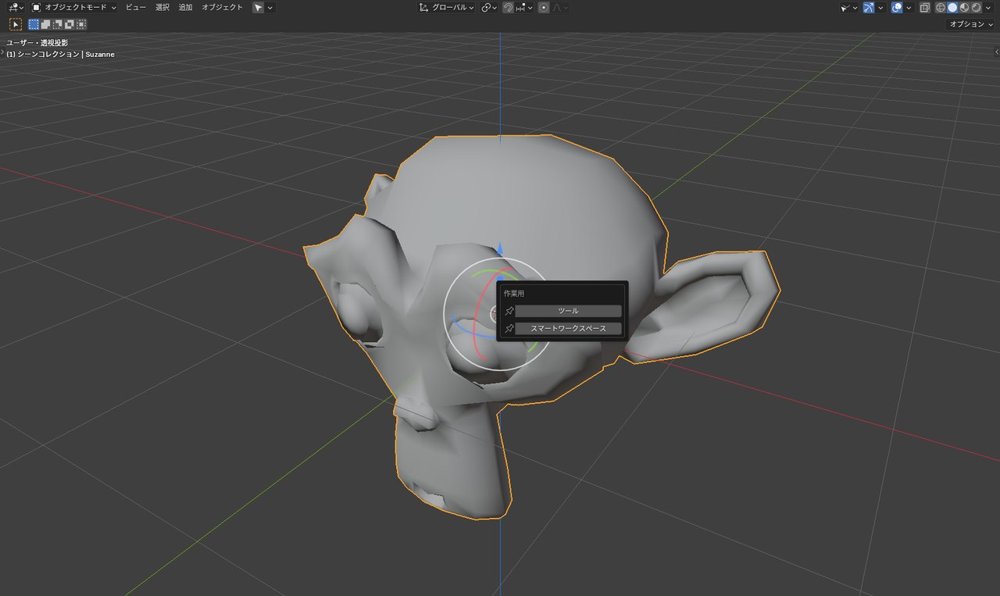
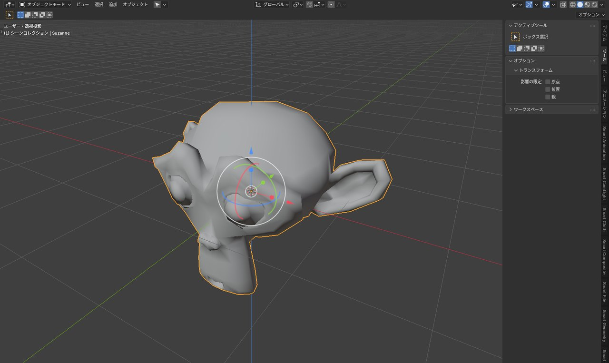
- 3D ビューのサイドバー（N キー）の「Smart Workspace」タブを開きます。
- 「Nパネル管理」の「パネル一覧」で更新の印を押します。
- 「カテゴリー」の＋でカテゴリーを作り、名前を「作業用」に変えます。
- 「パネル一覧」で「ツール」を選び、「カテゴリー」の「選択したタブを上に追加」を押します。「スマートワークスペース」も同じように入れます。
- 「ワークスペースとランチャー」の「クイックランチャーを開く」を押します。
- ポップアップの「ツール」のボタンを押します。
見どころ：始めはサイドバーが閉じています。ランチャーにカテゴリー「作業用」と 2 つのボタンが出て、「ツール」を押すと、右にサイドバーが開いて「ツール」のタブの中身が見えます。
実例よく使うタブのパネルをピン留めする（スザンヌで試した様子）
ランチャーのピンの印を押すと、そのタブのパネルが、ほかのタブを開いている時も表示されます。
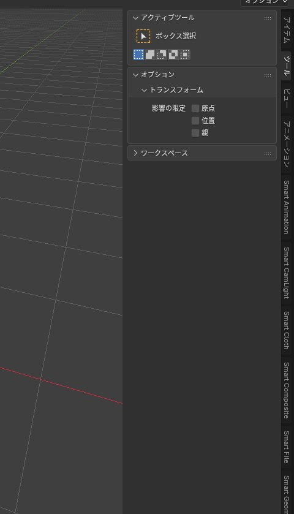
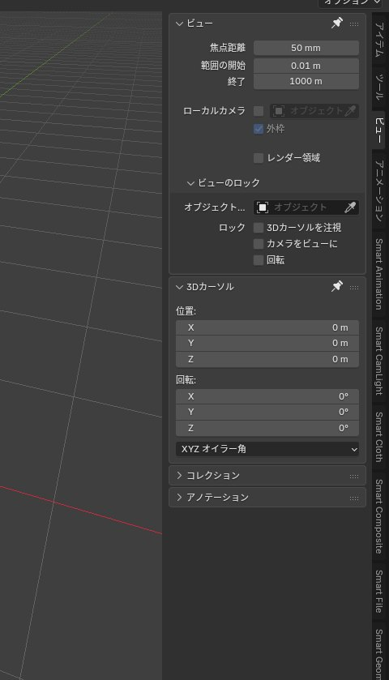
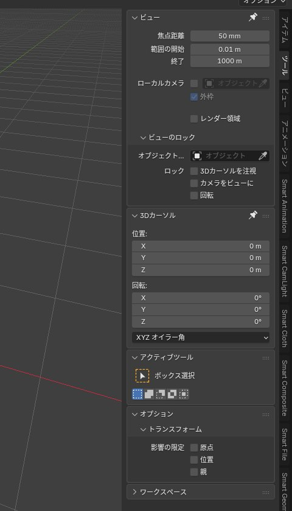

- クイックランチャーを開き、「ビュー」のボタンの左のピンの印を押します。
- サイドバーが「ビュー」のタブで開きます。
- サイドバーの右端で「ツール」のタブを押します。
- ピンを外す時は、もう一度ピンの印を押します。
見どころ：「ツール」のタブを開いているのに、「ビュー」のタブのパネルが一緒に並びます。見出しにピンの印が付いたパネルがそれです。
4-7. カテゴリー
ランチャーに出すカテゴリーを作り、その中にタブを入れます。カテゴリーから外しても、元のアドオンやパネルは消えません。
場所「Nパネル管理」→「カテゴリー」
| 表示 | 働き |
|---|---|
| カテゴリーの一覧と ＋ ／ － | ＋で新しいカテゴリーを作り、－で選んだカテゴリーを消します。名前は一覧の上でダブルクリックして変えます。 |
| 上下の矢印 | カテゴリーの並び順を変えます。 |
| 2. 選択中カテゴリーの中身 | カテゴリーを 1 つ以上作って選ぶと出る枠です。入っているタブの一覧と、カテゴリー名の欄があります。右の－で外し、矢印で順番を変えます。 |
| 歯車のボタン（View3D設定を編集） | 「2. 選択中カテゴリーの中身」の右にあります。一覧で選んだ項目を別窓で開く時の、窓の大きさ・出す位置（マウスの中心、前回の位置など）を設定します。 |
| 選択したタブを上に追加 | 「パネル一覧」で選んでいるタブを、このカテゴリーに入れます。サイドバーが狭い時は「選択タブを追加」と短く出ます。 |
4-8. パネル一覧
Smart Workspace が見つけた N パネルのタブ（または個々のパネル）の一覧です。ここで選んだ物を、カテゴリーへ入れます。タブの名前と並び順を変えて、ランチャーのボタンと実際のサイドバーのタブに反映できます。
場所「Nパネル管理」→「パネル一覧」
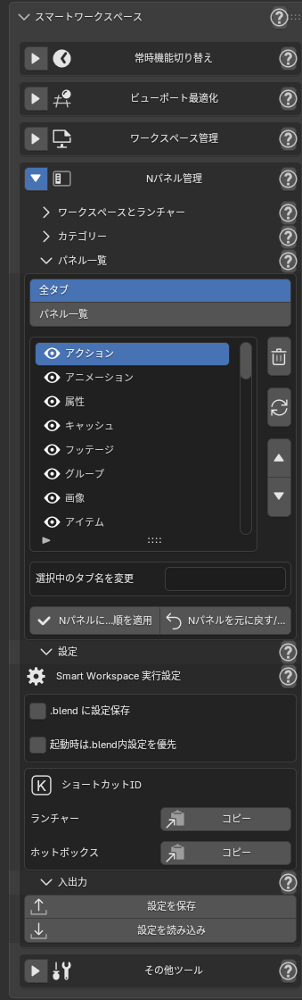
| 表示 | 働き |
|---|---|
| 全タブ／パネル一覧 | 一覧に出す物を、サイドバーのタブ単位（「全タブ」）か、個々のパネル単位（「パネル一覧」）かで切り替えます。下の目の印・ごみ箱・名前の変更・適用のボタンは「全タブ」の時に出ます。 |
| 目の印 | そのタブをクイックランチャーとホットボックス（N パネルのタブを呼び出すメニュー）に出すかどうかを切り替えます。消すと、カテゴリーに入れてあってもランチャーのボタンが消えます。Blender のサイドバーのタブ自体は消えません。 |
| ごみ箱の印（未使用タブを整理） | もう無いタブや古い記録を一覧から片付けます。 |
| 更新の印 | 今のサイドバーを調べ直し、一覧を実在するタブに合わせます。アドオンを有効・無効にした後に押します。 |
| 上下の矢印 | 「全タブ」の一覧の中で、タブの順番を変えます。「Nパネルにリネームと並び順を適用」を押すと、サイドバーのタブもこの順に並びます。クイックランチャーのボタンの順は変わりません（「カテゴリー」の中の順です）。 |
| 選択中のタブ名を変更 | 一覧でタブを選んでいる時だけ出る欄です。選んだタブに別の名前を付けると、ランチャーのボタンにその名前が出ます。「Nパネルにリネームと並び順を適用」を押すと、サイドバーのタブもこの名前になります。 |
| Nパネルにリネームと並び順を適用 | 押すと、サイドバーのタブがこの一覧の名前と並び順になります。Blender 本体の「アイテム」のタブは名前も位置も変わらず、一番上のままです。「Smart Workspace」のタブは、並びだけが変わります。「読込時に自動復元」が「有効」なら、次に Blender を起動した時も同じ名前と並びになります。「無効」の時は、起動し直すと元に戻るので、もう一度押します（サイドバーが狭いと「Nパネルに...順を適用」と途中が省かれます）。 |
| Nパネルを元に戻す/リセット | 押すと、サイドバーのタブの名前と並びが元に戻り、このワークスペースのタブのピンも外れます。一覧に付けた名前はランチャーのボタン用に残ります（サイドバーが狭いと「Nパネルを元に戻す/...」と途中が省かれます）。 |
実例目の印を消してランチャーのボタンを隠す（スザンヌで試した様子）
「パネル一覧」の目の印を消すと、カテゴリーに入れたままランチャーのボタンだけを隠せます。
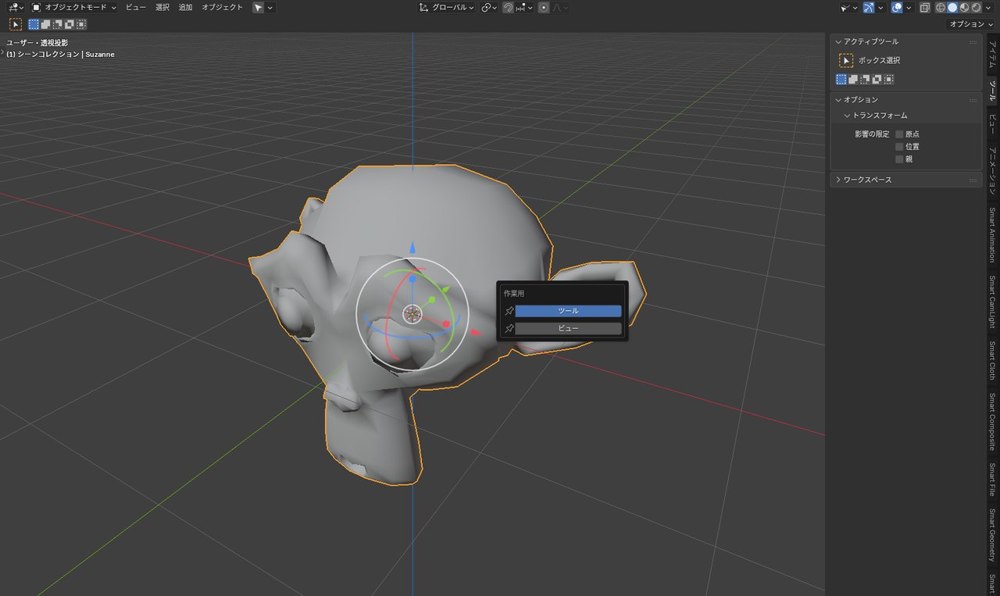
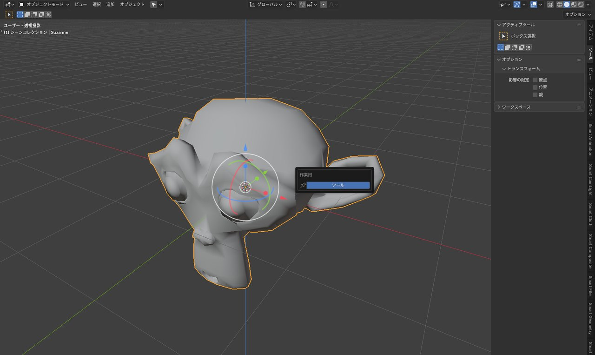
- カテゴリーに「ツール」と「ビュー」を入れ、クイックランチャーを開きます。
- 「パネル一覧」で「ビュー」の目の印を押して消します。
- もう一度クイックランチャーを開きます。
見どころ：ランチャーから「ビュー」のボタンが消えます。サイドバーの「ビュー」のタブは残ります。
実例サイドバーのタブの名前と並びを変える（スザンヌで試した様子）
「パネル一覧」でタブに名前を付けて順番を変え、適用のボタンを押すと、実際のサイドバーのタブが変わります。
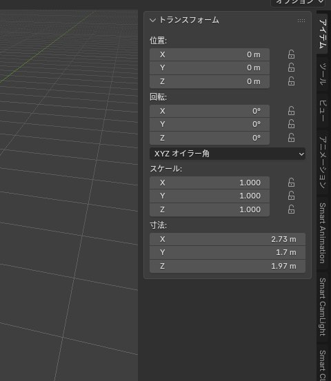
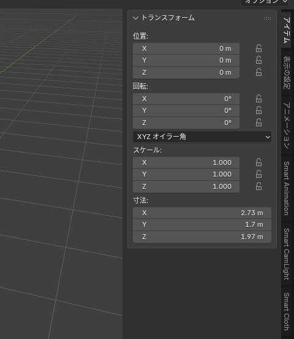

- 3D ビューのサイドバー（N キー）の「Smart Workspace」タブを開きます。
- 「Nパネル管理」→「パネル一覧」を開き、「全タブ」で更新の印を押します。
- 一覧で「ビュー」を選び、「選択中のタブ名を変更」に「表示の設定」と入れます。
- 上向きの矢印で、「表示の設定」のタブを一覧の一番上まで上げます。
- 「Nパネルにリネームと並び順を適用」を押します。
- 元に戻す時は「Nパネルを元に戻す/リセット」を押します。
見どころ：右端のタブの列を比べてください。「ビュー」が「表示の設定」に変わり、「アイテム」のすぐ下へ移ります。ほかのタブも一覧の順に並びます。本体の「アイテム」は一番上のままです。リセットを押すと、元の名前と並びに戻ります。
4-9. 設定
Smart Workspace 全体の動きにかかわる設定です。普段は既定値のままで構いません。
場所「Nパネル管理」→「設定」
| 表示 | 働き |
|---|---|
| .blend に設定保存 | Smart Workspace の設定を、今の .blend ファイルの中にも保存します。作品ごとに別の構成にしたい時に使います。 |
| 起動時は.blend内設定を優先 | 開いた .blend に設定が入っていれば、普段の設定より先にそちらを読み込みます。 |
| ショートカットID（「ランチャー」「ホットボックス」の「コピー」） | クイックランチャーとホットボックス（N パネルのタブを呼び出すメニュー）をショートカットに登録する時に使います。「コピー」を押すと、登録に使う名前を写し取れます。 |
4-10. 入出力
Smart Workspace の設定を、自分で選んだ JSON ファイル（設定を書いた文字のファイル）へ書き出したり、読み込んだりします。バックアップや別の PC への移しに使います。
場所「Nパネル管理」→「入出力」
| 表示 | 働き |
|---|---|
| 設定を保存 | 今の設定を JSON ファイルへ書き出します。 |
| 設定を読み込み | JSON ファイルから設定を読み込み、すぐに反映します。サイドバーが狭い時は「設定読込」と短く出ます。 |
4-11. その他ツール
補助の機能を 5 つまとめた見出しです。必要な物だけ開いて使います。
場所「Smart Workspace」タブ →「その他ツール」
| 表示 | 働き |
|---|---|
| 2Dパンビュー | カメラの絵を専用の窓で開いて確かめます。 |
| ビューポートUI切替 | 3D ビューのツールバー・サイドバー・ヘッダーをまとめて隠す・出すボタンです。 |
| ワークスペース順序移動 | ワークスペースのタブを 1 つずつ並べ替える機能です。 |
| ワークスペース同期 | ワークスペースを切り替えた時に 3D ビューの状態を揃えます。 |
| フローティングウィンドウ固定 | 切り離した別窓の中身を保ちます。 |
4-12. 2Dパンビュー
選んだカメラの絵を、2D の確認に向いた専用の窓で開きます。窓の大きさ、表示、構図のガイド（三分割など）、操作の感度を決め、プリセットとして保存できます。
場所「その他ツール」→「2Dパンビュー」
| 表示 | 働き |
|---|---|
| ターゲットカメラ | 開く窓で使うカメラを選びます。カメラを選ぶまでは「ビューを起動」が灰色で押せません。 |
| ビューを起動 | 選んだカメラの窓を開きます。 |
| ウィンドウ設定 | 「起動モード」（「新規ウィンドウ」か「エリア分割」）、「既存ウィンドウを再利用」、「サイズ方式」（「親ウィンドウ比率」「ピクセル指定」「レンダー解像度」）と「ウィンドウ比率」、「配置方式」（「カーソル中心」など）、「UIを非表示（全面化）」を決めます。「エリア分割」を選ぶと、新しい窓を開かずに今の 3D ビューを分けて、片側にカメラの絵を出します。 |
| ビュー設定 | はじめは閉じている枠です。「ビューの回転をロック」、オーバーレイの表示、ワイヤーフレームや透過表示の表示と濃さ、ワイヤーのカラー、オブジェクトのカラー、「背景」、「アウトライン」（輪郭）の表示を決めます。 |
| カメラガイド | はじめは閉じている枠です。「セーフエリア」（画面の安全範囲）、「パスパートゥ」（カメラの枠の外を暗くする表示）と「パスパートゥ不透明度」、「構図ガイド」（「三分割」「中心」「黄金比」「対角線」など）を決めます。 |
| 2Dナビゲーション | 「ナビゲーション方式」（「パンのみ」「パン＋ズーム」）、「パン感度」「ズーム感度」「ズーム反転」「ズームをロック」を決めます。 |
| プリセット | はじめは「プリセットを初期化」を 1 回押します。その後は、スロット（保存の枠）を選んで「保存」「読み込み」で設定を出し入れします。 |
| ウィンドウ管理 | はじめは閉じている枠です。開いている 2Dパンビューの窓の一覧です。「更新」で一覧を読み直し、「ビュー更新」で今の設定を全部の窓へ送り、「全て閉じる」で全部閉じます。各行の目の印で前に出し、×の印で 1 つずつ閉じます。窓が無い時は「追跡中のウィンドウはありません。」と出ます。 |
実例カメラの絵を構図のガイド付きで横に出す（スザンヌで試した様子）
「2Dパンビュー」でカメラと構図のガイドを選んで起動すると、カメラから見た絵が専用の画面に出ます。
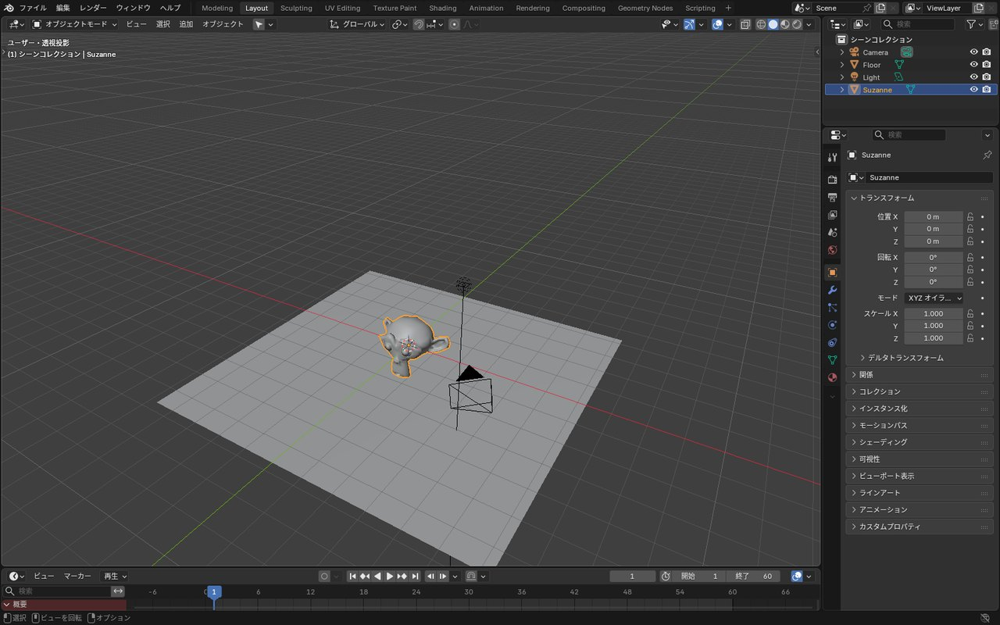
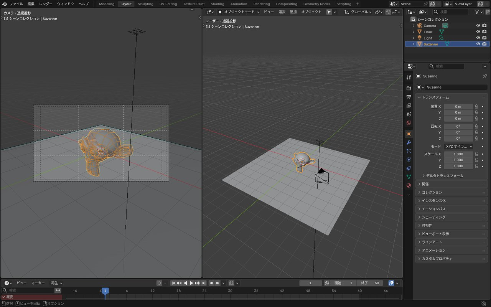
- 3D ビューのサイドバー（N キー）の「Smart Workspace」タブを開きます。
- 「その他ツール」→「2Dパンビュー」を開きます。
- 「ターゲットカメラ」で「Camera」を選びます。
- 「ウィンドウ設定」の「起動モード」で「エリア分割」を選びます。
- 「カメラガイド」の「構図ガイド」で「三分割」を選びます。
- 「ビューを起動」を押します。
- 窓の左下に操作のヒントを出す時は、「常時起動切り替え」の「2Dパンビュー HUD」を「有効」にします。
見どころ：左半分にカメラから見た絵が出て、三分割の線と安全範囲の枠が重なります。枠の外は暗くなります。右半分は元の 3D ビューのままです。「2Dパンビュー HUD」を「有効」にすると、左の画面の左下に操作のヒントが出ます。
4-13. ビューポートUI切替
今の 3D ビューだけを対象に、ツールバー・サイドバー・ヘッダーをまとめて隠したり出したりします。ほかのワークスペースや、ほかの 3D ビューは変わりません。
場所「その他ツール」→「ビューポートUI切替」
| 表示 | 働き |
|---|---|
| ツールバー、サイドバー、ヘッダーを非表示 | 3 つをまとめて隠します。隠した後は、同じボタンが「ツールバー、サイドバー、ヘッダーを表示」に変わります。 |
実例ツールバー・サイドバー・ヘッダーをまとめて隠す（スザンヌで試した様子）
1 つのボタンで、今の 3D ビューのツールバー・サイドバー・ヘッダーをまとめて隠し、作業の画面を広く使えます。
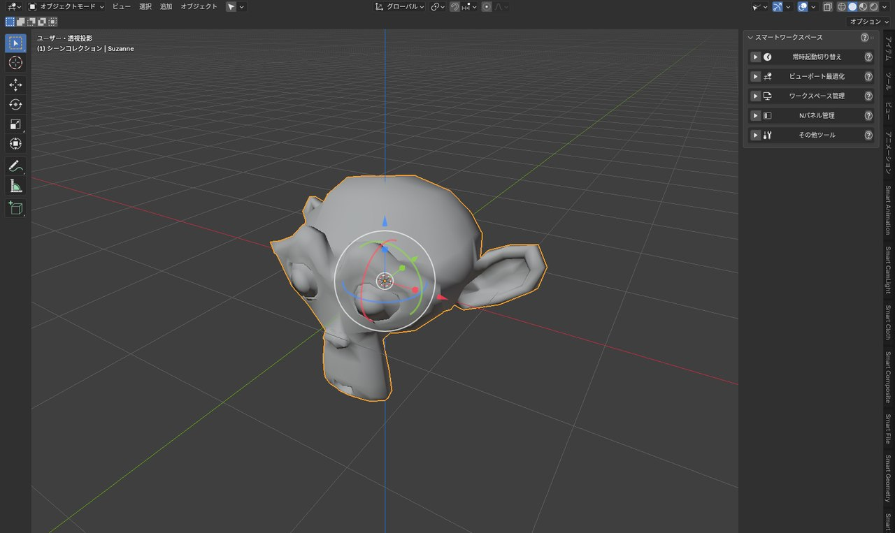
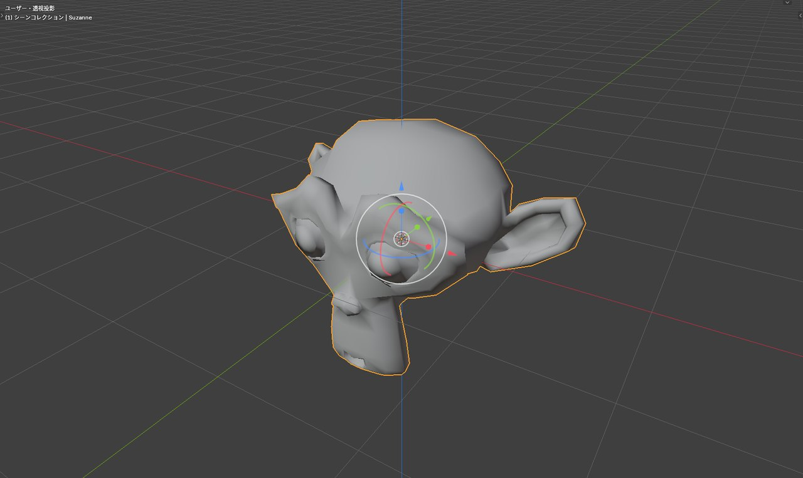
- 3D ビューのサイドバー（N キー）の「Smart Workspace」タブを開きます。
- 「その他ツール」の見出しを開き、「ビューポートUI切替」を開きます。
- 「ツールバー、サイドバー、ヘッダーを非表示」を押します。
- もう一度出す時は、N キーでサイドバーだけを出し、同じ場所に変わって出る「ツールバー、サイドバー、ヘッダーを表示」を押します。
見どころ：前は左のツールバー・右のサイドバー・上のヘッダーが出ていますが、後は 3 つとも消えて 3D ビューが画面いっぱいになります。
4-14. ワークスペース順序移動
ワークスペースのタブを右クリックした時のメニューに、1 つずつ前後へ動かす項目を足します。シーンやオブジェクトには触りません。
場所「その他ツール」→「ワークスペース順序移動」。動かす操作は、画面の一番上のワークスペースのタブを右クリックして行います。
| 表示 | 働き |
|---|---|
| 有効／無効 | 右クリックメニューに項目を足すかどうかを切り替えます。下に「現在の状態」が出ます。 |
| 前側に移動（右クリックメニュー） | 右クリックしたワークスペースを、1 つだけ前（左）へ動かします。 |
| 後ろ側に移動（右クリックメニュー） | 右クリックしたワークスペースを、1 つだけ後ろ（右）へ動かします。 |
実例ワークスペースのタブを 1 つ後ろへ動かす（スザンヌで試した様子）
右クリックの「後ろ側に移動」で、タブを 1 つだけ右へ動かせます。
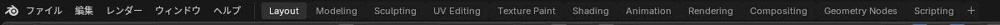
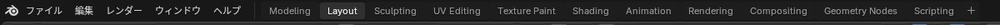
- 3D ビューのサイドバー（N キー）の「Smart Workspace」タブを開きます。
- 「その他ツール」→「ワークスペース順序移動」の「有効」を押します。
- 画面の一番上の「Layout」のタブを右クリックし、「後ろ側に移動」を押します。
見どころ：画面の一番上の並びを見ます。「Layout」が「Modeling」の右へ 1 つ動きました。シーンの中身は変わりません。
4-15. ワークスペース同期
ワークスペースを切り替えた時に、切り替え先の 3D ビューの見ている向き・距離・表示を、切り替え前と揃えます。
場所「その他ツール」→「ワークスペース同期」
| 表示 | 働き |
|---|---|
| 有効／無効 | 同期をするかどうかを切り替えます。下に「現在の状態」が出ます。 |
| 同期オプション | 「シェーディングタイプも同期」「シェーディング設定も同期」「オーバーレイも同期」で、揃える物を足します。 |
| 同期対象ワークスペース | ワークスペースの名前ごとのチェックで、同期に入れるワークスペースを選びます。今あるワークスペースが全部並びます。 |
実例ワークスペースを替えても見ている向きを揃える（スザンヌで試した様子）
「ワークスペース同期」を有効にすると、ワークスペースを切り替えても 3D ビューの向きと距離が引き継がれます。
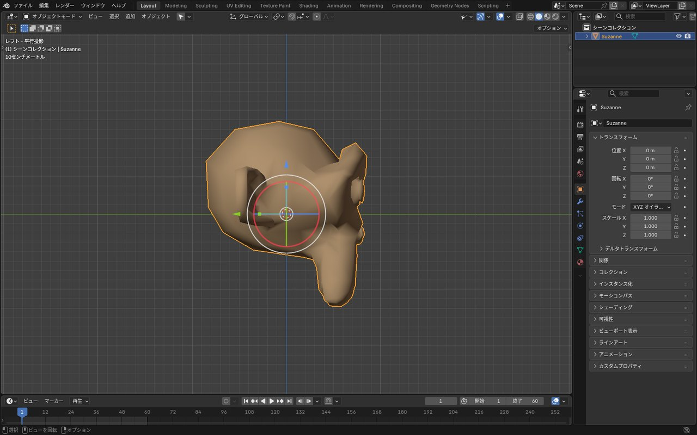
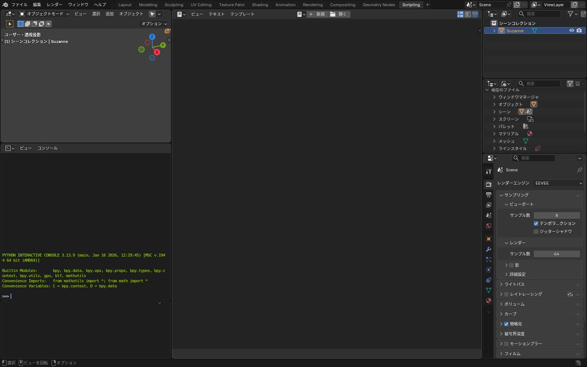

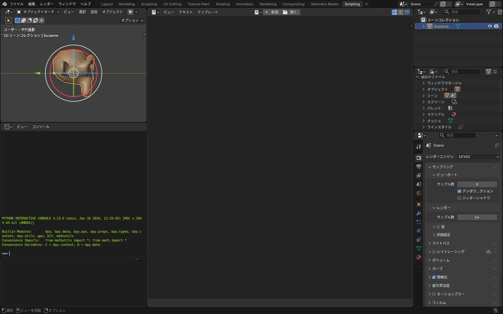
- 3D ビューのサイドバー（N キー）の「Smart Workspace」タブを開きます。
- 「その他ツール」→「ワークスペース同期」の「有効」を押します。
- 画面の一番上のタブで、「Layout」から「Scripting」へ切り替えます。
見どころ：「無効」のままだと、「Scripting」の左上の 3D ビューは別の向きと距離で、スザンヌが見えません。「有効」にして切り替えると、同じ横向きのスザンヌが写ります（小さな画面なので写りも小さくなります）。
4-16. フローティングウィンドウ固定
ワークスペースのタブを切り替えた時に、切り離した別窓（フローティングウィンドウ）のエディターの中身が変わらないように保ちます。無効の間は何も動きません。
場所「その他ツール」→「フローティングウィンドウ固定」
| 表示 | 働き |
|---|---|
| 有効／無効 | 固定するかどうかを切り替えます。下に「現在の状態」が出ます。 |
そのほかの画面
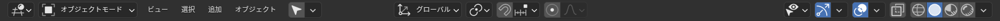
5. よく使う手順
よく使うタブをクイックランチャーにまとめる
N パネルのタブが多すぎる時に、よく使う物だけをポップアップから開けるようにします。
- 「Smart Workspace」タブの「Nパネル管理」を開きます。
- 「パネル一覧」を開き、「全タブ」を選んで、更新の印を押します。
- 「カテゴリー」を開き、＋を押してカテゴリーを作ります。一覧の名前をダブルクリックして、分かりやすい名前に変えます。
- 「パネル一覧」で入れたいタブを選び、「カテゴリー」の「選択したタブを上に追加」を押します。入れたいタブの数だけ繰り返します。
- 「ワークスペースとランチャー」の「クイックランチャーを開く」を押します。
結果：カテゴリーごとにタブのボタンが並んだポップアップが出ます。ボタンを押すと、サイドバーがそのタブで開きます。
ショートカットキーでランチャーを開く
キー 1 つでクイックランチャーを出せるようにします。
- 「Nパネル管理」→「設定」の「ショートカットID」にある「ランチャー」の右の「コピー」を押します。
- 「編集」→「プリファレンス」→「キーマップ」を開きます。
- 一覧の「3Dビュー」の分類を開き、その一番下の「新規作成」を押して項目を足します。
- 足した項目を開き、オペレーターの ID の欄に、写し取った名前を貼り付けます。
- 好きなキーを割り当て、「プリファレンスを保存」で保存します。
結果：3D ビューで割り当てたキーを押すと、クイックランチャーが開きます。
重いシーンで表示を軽くする
回転やズームがもたつく時に、3D ビューの表示を軽くします。
- 「Smart Workspace」タブの「ビューポート最適化」を開きます。
- 「詳細設定」を開き、「設定の読込」の「設定:」で「パフォーマンス」を選んで「プリセットを適用」を押します。「設定モード」は自動で「最適化」になります。
- 普段の表示に戻す時は「標準」を押します。3D ビューのヘッダーの左端のアイコンでも切り替えられます。
結果：適用すると、補助表示が消えた平たく軽い表示になります。「標準」を押すと、物ごとの表示・選択・アンドゥなどが適用の前の状態に戻り、シェーディングとオーバーレイは「標準」の設定の値になります。
画面の配置を保存して、あとで戻す
作業しやすく分けた画面の配置を記録しておきます。
- 戻したい配置の画面にしてから、「ワークスペース管理」を開きます。
- 「現在のワークスペース設定を保存」を押します。
- あとで戻す時は、「セーブステート」の一覧で保存した物を選びます。
- 「現在のワークスペースに読み込み」を押し、確認の窓で読み込む情報を選んで実行します。
結果：今のワークスペースの区切りとエディターの種類が、保存した時の形に戻ります。
カメラの絵を別の窓で確かめる
カメラから見た絵を、構図のガイド付きで別の窓に出します。
- シーンにカメラを置いておきます。
- 「その他ツール」→「2Dパンビュー」を開きます。
- 「ターゲットカメラ」でカメラを選びます。
- 必要なら「カメラガイド」の「構図ガイド」で「三分割」などを選びます。
- 「ビューを起動」を押します。
結果：選んだカメラの絵が専用の窓で開きます。窓の中ではパイメニューから「フィット」や「2Dナビ開始」を使えます。
サイドバーのタブの名前と並びを変える
タブが多い時に、よく使うタブを上に集め、分かりやすい名前を付けます。
- 「Smart Workspace」タブの「Nパネル管理」→「パネル一覧」を開き、「全タブ」を選んで、更新の印を押します。
- 名前を変えたいタブを一覧で選び、「選択中のタブ名を変更」の欄に名前を入れます。
- 上下の矢印で、一覧の順番を変えます。
- 「Nパネルにリネームと並び順を適用」を押します。
- 次の起動でも同じにしたい時は、「常時起動切り替え」の「Smart Workspace: 読込時に自動復元」を「有効」にします。
結果：サイドバーのタブが新しい名前と順番になります。元に戻す時は「Nパネルを元に戻す/リセット」を押します。
6. 困った時
- 入れたアドオンのタブが「パネル一覧」に出ません。
- 「パネル一覧」の更新の印を押してください。今のサイドバーを調べ直し、一覧を実在するタブに合わせます。アドオンを有効・無効にした後は、毎回押します。
- タブの名前や並び順を変えたのに、N パネルが変わりません。
- 名前と順番を変えただけでは、サイドバーは変わりません。「パネル一覧」の「Nパネルにリネームと並び順を適用」を押してください。Blender 本体の「アイテム」のタブだけは変わりません。
- N パネルのタブの並びを最初の状態に戻したいです。
- 「パネル一覧」の「Nパネルを元に戻す/リセット」を押してください。タブの名前と並びが元に戻ります。
- カテゴリーからタブを外すと、元のアドオンも消えますか。
- 消えません。外れるのはランチャーの設定からだけで、元のアドオンやパネルはそのまま残ります。
- 設定はどこに保存されますか。Blender を起動し直すと消えますか。
- Blender の CONFIG フォルダーの Smart_Workspace_Suite に自動で保存され、起動し直しても戻ります。作品ごとに変えたい時は「設定」の「.blend に設定保存」をオンにします。
- サイドバーが消えて、Smart Workspace のボタンが押せなくなりました。
- 「ビューポートUI切替」でまとめて隠した状態です。3D ビューの上で Blender 標準の操作でサイドバーを出し（全体仕様書の「N パネルの開き方」の章を見てください）、「その他ツール」→「ビューポートUI切替」の「ツールバー、サイドバー、ヘッダーを表示」を押すと、ツールバー・サイドバー・ヘッダーがまとめて戻ります。
- ビューポート最適化を使った後、表示が元に戻りません。
- 「ビューポート最適化」の「設定モード」で「標準」を押してください。3D ビューのヘッダーの左端のアイコンでも切り替えられます。「標準」の見た目は保存済みの設定へ戻るため、常に平たい表示になるわけではありません。「3Dビュー > シェーディング」の「ライティング」などで好みに変えられます。
- 常時起動切り替えの項目は、全部オンにした方がよいですか。
- いいえ。オンの項目は裏で動き続けます。使う機能だけをオンにしてください。
- 「ワークスペース管理」を開くと「ワークスペース管理が初期化されていません。」と出て、保存のボタンがありません。
- 「ワークスペース管理を修復」を押してください。登録をやり直し、保存した状態と一覧を戻します。
- モディファイアや物の表示がオフのままで、「標準」を押しても戻りません。
- 「標準」で戻るのは、最適化を適用した時に記録した物だけです。記録の無い物は、モディファイアやアウトライナーのビューポートの表示を手で戻してください。
- パフォーマンスにしたら、アーマチュアや空が見えなくなり、物も選べません。
- 「パフォーマンス」の働きです。「標準」を押すと戻ります。アーマチュアを操作する作業の時は「パフォーマンス」を使わないでください。
アドオンが出ない・日本語にならない、など全部のアドオンに共通のことは、全体仕様書の「困った時」を見てください。
7. 用語集
- N パネル（サイドバー）
- 3D ビューなどの右側に出る縦長の領域です。右端に縦に並ぶ「タブ」で中身を切り替えます。
- タブ
- サイドバーの右端に縦に並ぶ見出しです。アドオンごとにタブが増えていきます。
- ワークスペース
- 画面の一番上に並ぶ「Layout」「Modeling」などの、作業ごとの画面の組み合わせです。
- クイックランチャー
- 登録したタブをボタンにして並べたポップアップです。ボタンを押すとそのタブが開きます。
- カテゴリー
- クイックランチャーの中のグループです。自分で作り、好きなタブを入れます。
- ピン留め
- パネルを、ほかのタブを開いている時も表示することです。ランチャーのボタンの左にあるピンの印で、タブの中のパネルにまとめて付けます。
- セーブステート
- ワークスペース管理で保存した、画面の配置の記録です。
- オーバーレイ
- 3D ビューの上に重ねて出る補助の表示です（床のグリッド、原点の点など）。
- ギズモ
- 3D ビューに出る、移動・回転の矢印や、右上のナビゲーションの印です。
- パイメニュー
- マウスの周りに丸く並んで出るメニューです。
- ホットキー
- 機能を呼び出すショートカットキーのことです。
- CONFIG フォルダー
- Blender が設定を保存するフォルダーです。Windows では AppData の Blender Foundation の中にあります。
8. 付録：版と確認値・できないこと
| アドオン | Smart Workspace（smart_workspace_suite） |
|---|---|
| 版 | 1.0.0 |
| ZIP | SmartWorkspace_1.0.0_652B68A6B820_INSTALLABLE.zip |
| 大きさ | 854,431 バイト |
| SHA256 | 9d211a663fe4da3b36b390120fba45a023a5cccf662cbf5e52be8be9cbef2275 |
できないこと・注意
- ワークスペース管理は、新しいワークスペースのタブを作りません。読み込みで戻るのは画面の区切りとエディターの種類で、3D ビューの向きやサイドバーの開閉は戻りません。
- 「ビューポートUI切替」で隠すとサイドバーも隠れます。戻す時は、Blender 標準の操作でサイドバーを出してから「ツールバー、サイドバー、ヘッダーを表示」を押します。
- 2Dパンビューの「ウィンドウ管理」で窓を前に出す操作は、環境によっては Blender 5.1 が対応していません。その時は OS の窓の切り替えを使います。
- 常時起動切り替えでオフの機能は、動かすための読み込みをしません。その機能を使う時は、先にオンにしてください。
- 「プリセットを適用」は、「設定の自動保存」がオフの時はファイルに保存されません。残したい時は保存ボタンを押します。
- 「標準」を押しても、シェーディングとオーバーレイは最適化の前の見た目には戻らず、「標準」の設定の値になります。
- クイックランチャーのタブのボタンは、3D ビューのサイドバーを開きます。
- Blender 本体の「アイテム」のタブは、名前も並びも変えられません。「アイテム」のタブの「トランスフォーム」にはピンも付きません。
- 「Nパネルにリネームと並び順を適用」の後に有効にしたアドオンのタブは、もう一度押すまで元の名前のままです。
- タブの中のパネルのピンは、パネルが開いた状態で描かれた時に付きます。閉じているパネルには、開いた時に付きます。起動し直した後は、ピンを付けたタブを一度開くと付きます。
- ピンを外す時も同じで、今見えていないパネルのピンは、次に表示された時に外れます。Smart Workspace を無効にした時も同じです。
- ピンの付いた状態は .blend にも保存されます。「パネルピン追従」を無効にする前に保存したファイルを開くと、ピンが付いたままです。パネルの見出しを右クリックして外します。
- 同梱のパイメニューのうち、アウトライナーで X キーを押すと出るパイの「Smart Workspace のクリーンアップ範囲」は、説明の文を出すだけで何も消しません（ファイル全体の使われていないデータは消しません）。使われていないデータを消す時は、Blender 標準の機能を使います。
Smart Workspace 解説書 v1.0.0 ／ 2026-11-17 作成